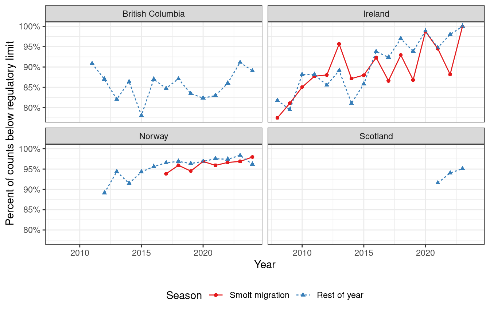
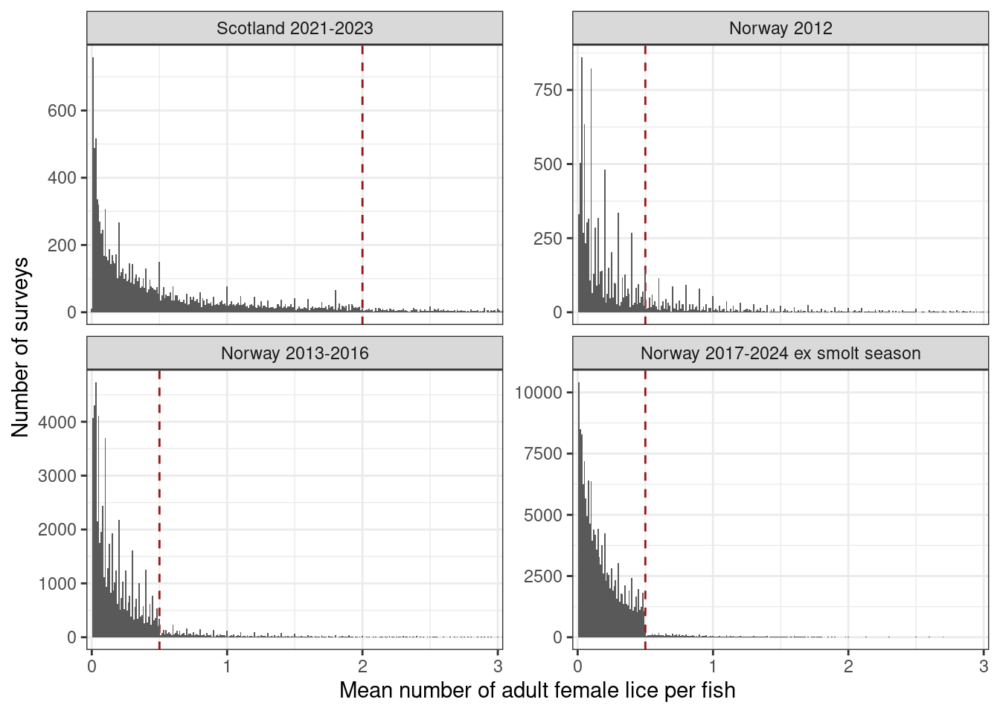
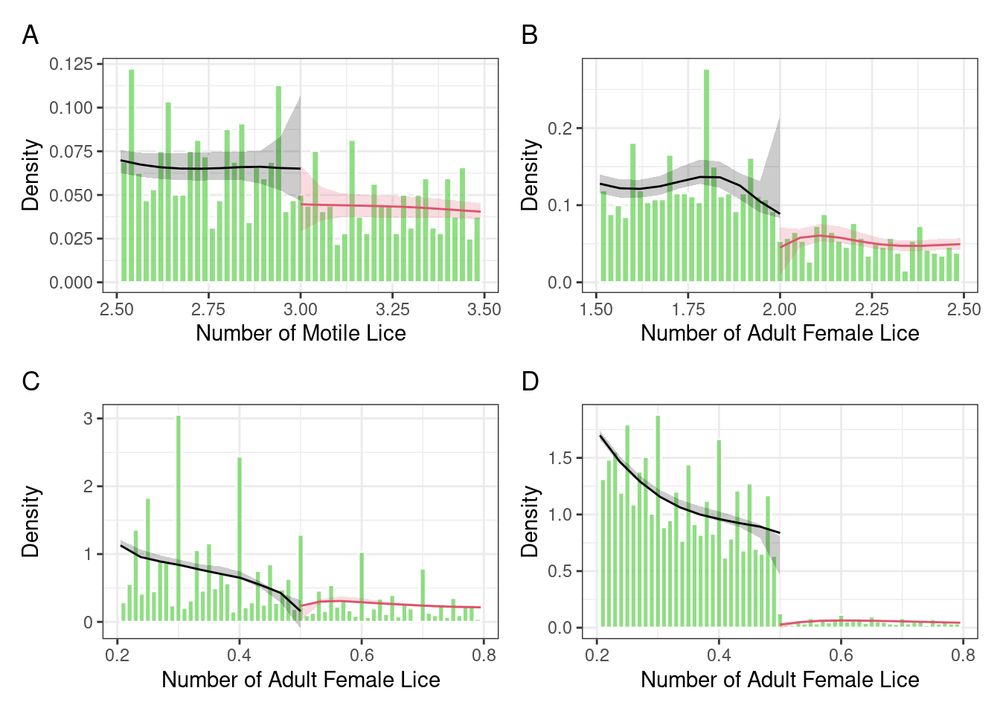
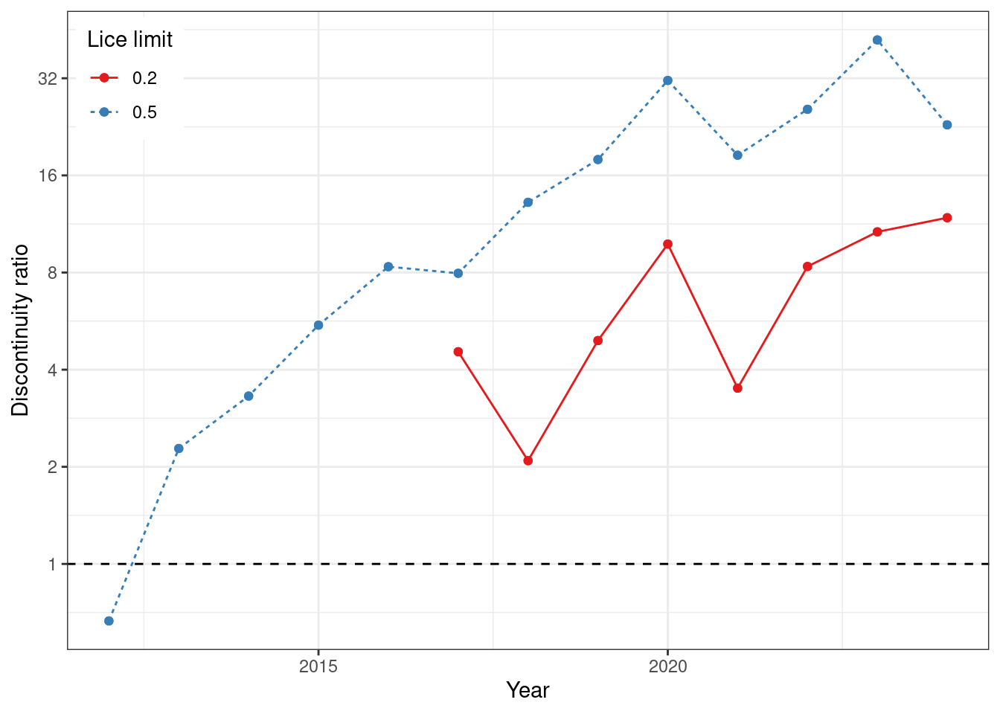
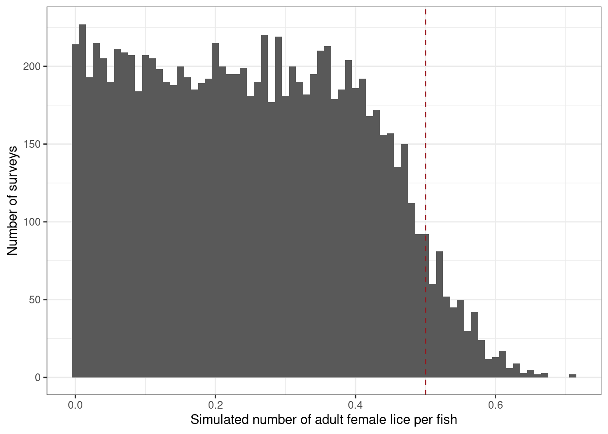
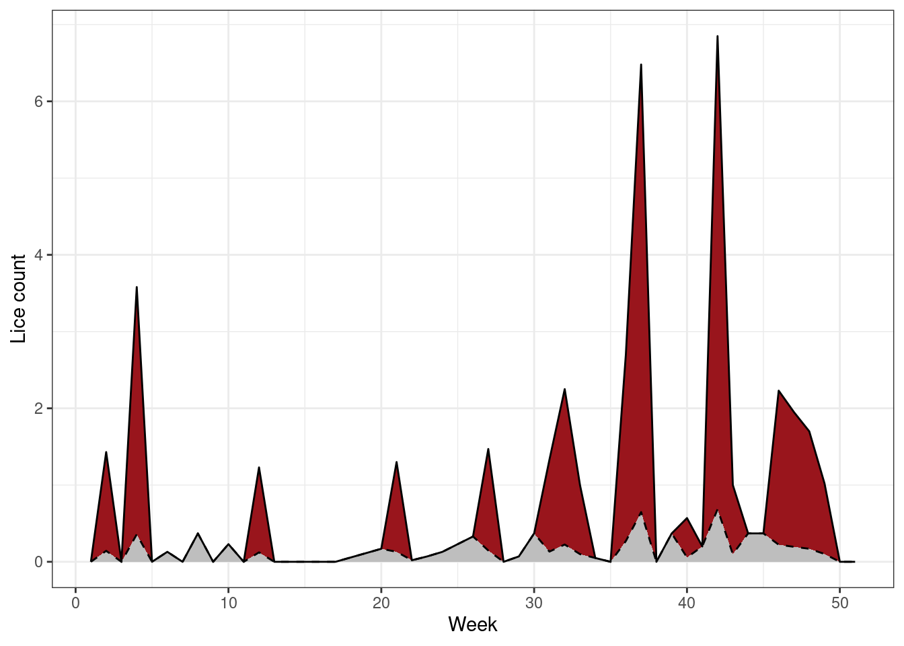

![]()
| Country | Period | Limit per fish |
|---|---|---|
| British Columbia, Canada | 2003 | 3 motile lice1 |
| Ireland | 2008- | 0.5 egg-bearing lice during the smolt out-migration, 2 otherwise |
| Norway | 2009-2012 | 1 adult female lice, or 5 motile lice |
| Norway | 2013-2016 | 0.5 adult female lice |
| Norway | 2017- | 0.2 adult female lice during smolt out-migration, 0.5 otherwise |
| Scotland | 2021- | 2 adult female lice triggers increases monitoring, 6 requires treatment |
| 1 Equivalent to 0.64--1.65 adult females per fish (Vormedal 2023). | ||
Lice at the limits: circumvention of regulatory limits on salmon lice counts in aquaculture facilities
Abstract
Salmon lice cause welfare issues to farmed salmonoids, economic losses to the aquaculture industry, and are one of the most serious threats to wild salmon populations. Conversely, regulations to control lice numbers impose welfare issues on farmed fish and economic costs in the industry. Analysis of publicly available sea lice counts show that in Norway, but not the other countries analysed, have a large discontinuity at the regulatory limit on the number of lice per fish. This discontinuity is consistent with Norwegian aquaculture facilities taking steps to circumvent the lice regulations. This paper ascribes the adoption of practices to circumvent the regulations to a change in how the limit is formulated in the Norwegian regulations, and recommends that the change is reverted, bringing the regulations in line with other countries, so that the lice count data are more reliable and can be used for managing the impact of the industry on wild salmon.
Keywords
Salmon lice, Traffic light system, regulations, circumvention, aquaculture
Introduction
Regulations impose a burden on the regulated. Companies will seek to minimise the cost of compliance by developing efficient procedures (Rubashkina et al. 2015), by circumventing the regulations (Kakade and Haber 2021), fraudulently claiming to comply (Jung and Sharon 2019), or by breaching them if the penalties are low or enforcement is weak (Sahramäki et al. 2015). If circumvention is widespread, regulations may fail to reach their objectives even though all parties are apparently fully complying (Kakade and Haber 2021). More onerous regulations further increase the cost of compliance and risk higher levels of non-compliance (Kakade and Haber 2021).
In common with many polluting industries, emissions from the aquaculture industry are regulated. The release from open-net pen salmon farms of pharmaceutical products (Casa-Resino et al. 2021), heavy metals (Burridge et al. 2010), and organic waste (Elvines et al. 2023) into the environment is regulated. There are also regulations to prevent fish escapes, which cause genetic pollution of wild populations (Glover et al. 2017), and to limit the spread of diseases and parasites from farmed to wild fish (Krkosek et al. 2024).
A parasite of particular concern is the salmon louse, Lepeophtheirus salmonis, an ectoparasitic copepod that infests salmonoid fish causing welfare issues and economic losses in the aquaculture industry (Abolofia et al. 2017). Salmon lice released by the aquaculture industry are thought to be one of the drivers of decreasing wild salmon populations (Forseth et al. 2017) alongside escaped farmed salmon, acidification and hydropower regulation. Consequently, countries with salmon farming have established regulatory frameworks to control lice infestations (Vormedal 2023). The severity of the regulations, which focus on the mean number of adult lice per fish (Table 1), varies between countries, and has changed over time.
The Norwegian regulations are the strictest. They have both the lowest limit for female lice per fish and the limit is the maximum permitted number of lice. In contrast, Ireland and British Columbia (Canada), the limit is a trigger for mandatory treatment, and in Scotland the limit is a trigger for increased monitoring and the trigger for treatment is six adult female lice per fish (Vormedal 2023).
In this paper, we explore how compliance with louse regulations by the aquaculture industry is affected by the severity of the regulations. This analysis builds upon the work of Jeong et al. (2023) who reported that in Norway the distribution of louse counts has an unexpected “cliff” or discontinuity at the regulatory limit. Data from British Columbia did not show this discontinuity. Jeong et al. (2023) ascribe this discontinuity to a desire by aquaculture managers to report values below the regulatory limits, but do not identify the mechanisms by which they could do this. Sævik and Sandvik (2023) dispute this interpretation, arguing that the discontinuity is due to efficient lice treatment in Norway. We extend this analysis to other countries with farmed and wild salmonoids, testing if there is a discontinuity in the louse counts distribution at the regulatory limit and try to explain it by natural processes or due to the regulations being circumvented.
Methods
We examine the distribution of the mean louse counts reported by the aquaculture facilities to the national regulators using publicly available data. Lice count data were downloaded from the regulators in British Columbia (2011–2024) (Fisheries and Oceans Canada 2024), Ireland (2008–2023) (Marine Institute 2008–2024), Norway (2012–2024) (Barentswatch 2024), and Scotland (2021–2023) (Scottish Environment Protection Agency 2024).
We test for discontinuities at the regulatory limits using the the ‘rddensity’ package version 2.6 (Cattaneo et al. 2024). All analyses were done in R version 4.4.2 (R Core Team 2024). Code to reproduce the analyses is available from https://github.com/richardjtelford/lice-at-the-limit
Results

The proportion of lice counts that comply with the regulations (Figure 1) is high and increasing in Ireland (reaching 100% compliance in 2023) and Norway regardless of season, but somewhat lower and more varied in British Columbia. The Scottish record is too short to meaningfully address trends.

With the exception of Norwegian data after 2012, histograms of louse counts show a gradual monotonic decline with heavy-tails (Figure 2). The spikes in the data either reflect rounding or many counts being based on the same number of fish. The spikes do not affect the rest of the analysis. Norwegian louse counts post-2017 show a different pattern, with a sharp drop to near zero counts at the regulatory limit. The data from outside the smolt migration period show a small rise in counts just below the regulatory limit. Histograms from 2013-2016 are transitional between the patterns shown in 2012 and post-2017.
Density discontinuity analysis (Cattaneo et al. 2018) finds no evidence of a discontinuity at the regulatory limit in British Columbia (t = -1.58, p = 0.1135) (Figure 3A) or in Ireland (t = 0.67, p = 0.5014) during the smolt migration season. The Scottish lice data show a small discontinuity at the regulatory limit (t = -2.95, p = 0.0032) (Figure 3B). There is no evidence of a discontinuity at the regulatory limit in Norway in 2012 (t = -0.06, p = 0.9498) (Figure 3C), but a discontinuity develops in subsequent years Figure 4 and is large in, for example, 2020 (t = -6.85, p = <0.001) (Figure 3D).


Discussion
Compliance
Compliance with the regulatory limit is high and increasing. As shown below, at least some of the increase in compliance in Norway since 2012 is due to the regulations being circumvented. It is unclear how the Irish aquaculture industry achieves such high compliance with the regulations, given that their limit is relatively low and the warm sea temperatures promote rapid louse population growth. This result warrants further investigation as there could be valuable lessons for the aquaculture industry in other countries.
Expected distribution of lice counts
The louse count distribution is the result of combining many different distributions for louse counts at different temperatures (fewer lice at colder temperatures), and different fish ages (more lice on older fish), and time since treatment to remove lice. The exact shape this combined distribution should take is not known, but the heavy-tailed monotonic decline shown by data from British Columbia, Ireland, Scotland, and Norway in 2012 seems like a plausible distribution.
Explaining the unexpected patterns in the Norwegian data
The discontinuity in the louse counts in the Norwegian data after 2012 are unexpected. There are at least four explanations for the patterns.
First, as argued by Sævik and Sandvik (2023) in response to Jeong et al. (2023), the sharp drop in lice numbers at the regulatory limit could be due to frequent and effective de-lousing treatments employed by the Norwegian aquaculture industry. Such treatments will undoubtedly steepen the curve of the lice count distribution, especially close to and above the regulatory limit. However, there are some problems with this hypothesis. As the lice counts from the other countries do not have large discontinuities at the regulatory limits, it would imply that the Norwegian aquaculture industry is uniquely efficient at controlling lice infestations even though some Norwegian operators have facilities in the other countries. More critically, this hypothesis might explain a steeper slope in the distribution, but cannot explain the abrupt drop at the limit because counting uncertainties would result in a smoother decline. The effect of counting uncertainty can be shown by simulating lice counts when the true counts are all strictly below the limit (Figure 5). The simulation shows that counting uncertainty will mean that, even in this perfect case, there will not be a discontinuity in lice counts and many lice counts will be above the regulatory limit. If the number of lice per fish was simulated with a negative binomial, to allow for over-dispersion, or the fewer fish were inspected, the slope would be even shallower.
Sævik and Sandvik (2023) simulate lice population growth and treatment to generate data that resemble the data shown by Jeong et al. (2023). In their simulation, once the lice abundance exceeds the regulatory limit, there is a 90% probability that the fish are cleaned with an efficacy of 0.9. This is identical to the third mechanism we propose (see below).

Second, when a count is above the regulatory limit, the facility could choose to count lice on more fish in the hope that the mean count will drop below the limit. This could be portrayed by managers as an attempt to get more accurate data. However, if the counts would not be increased when the count was slightly below the regulatory limit, the process will bias the lice count. This would lead to a increase in the number of counts just below the regulatory limit, as observed. Norwegian regulations (Regulations on salmon lice control 2012) require that counts are based on at least twenty fish per pen (ten outside of the smolt migration period). Counting extra fish if the louse count is above the regulatory limit is not prohibited. A correspondent within the Norwegian aquaculture industry confirmed that some companies use this procedure, but that it is rarely effective. It is akin to optional stopping in hypothesis testing, where the sample size is increased if statistical tests are not significant. Optional stopping is a form of p-hacking recognised as a questionable research practice (Stefan and Schönbrodt 2023) and causes an excess of p-values just below the significance threshold, and a deficit just above. The severity of optional stopping for gaming limits depends on the number of times the current count is checked and the number of fish examined between checks (Stefan and Schönbrodt 2023).
To show the effect of optimal stopping, we run a simulation of 10^{4} lice counts. In each count, the lice have a Poisson distribution with a mean of 0.5 per fish. If the original count on 50 fish exceeded the regulatory limit of 0.5 lice per fish, an extra 10 fish are counted and the mean louse count recalculated. In a simulation, 44.2% of the original counts exceed the limit, whereas 38.1% of the counts after optimal stopping exceed the limit.
Third, facilities with a count above the regulatory limit could immediately treat the fish to remove lice, and then recount the lice, and report the lower post-cleaning count. This would lead to a discontinuity in louse counts at the legal limit.
The size of the discontinuity in louse counts suggests that reporting post-treatment counts is widespread in the Norwegian aquaculture industry to the extent that it is standard practice. A representative of one of the main aquaculture companies confirmed this.
Finally, the patterns could be due to data falsification or fabrication. Two such cases have reached Norway’s supreme court. In 2015, one company with four facilities in northern Norway and its manager was convicted for fabricating and falsifying louse counts over a six month period in 2012–2013 (Norges Høyesterett 2016). Although the infestation reached 8.33 adult female lice per fish, the company avoided having to treat the lice by misreporting the louse counts. In an earlier case (Norges Høyesterett 2015), a manager of a company was convicted of reporting that there were no lice when counts had not been carried out. The prevalence of fabrication and gross falsification is probably low as the penalties for misreporting counts are high. Thus fabrication and falsification probably explain little of the observed patterns in the Norwegian lice count distribution, but small-scale fabrication cannot be excluded, and might present as an excess of louse counts just below the limit.
Implications
The previous Norwegian salmon lice regulations (2009, sec. 5), required that “treatment against salmon lice shall be carried out in the entire aquaculture facility if [the limit was exceeded]”. This version of the regulations was similar to the existing regulations in other countries. The current Norwegian salmon lice regulations (2012) §8 states that “at any time there must be fewer than [0.2 or 0.5 depending on the season] adult female salmon lice on average per fish in the aquaculture facility”. The regulation was changed to encourage facilities to treat lice proactively rather than waiting for the treat after the lice count exceeded the limit. The discontinuity in the counts began to develop shortly after the new regulations came into force, implying that the new regulations are directly responsible for the pervasive circumvention of the regulations in Norway.
The apparently pervasive practice of recounting the lice after cleaning if an initial count is above the limit implies that Norwegian aquaculture facilities are routinely out of compliance with the regulations (but would be compliant with the old regulations) and the lice counts they submit misrepresent the true abundance of lice. The effect of this reporting procedure on estimates of lice abundance can be demonstrated by taking some 2013 lice counts and reporting them as they would be in later years (Figure 6). In this example, the true mean lice count over the year is 470% higher than reported by the simulation. In sites that treat more often, the excess would be even higher.

This under-reporting of lice is problematic because the self-reported lice counts are used by the regulators of the aquaculture industry. In Norway, the Traffic Light System is a regulatory tool used since 2017 to balance the growth of the aquaculture industry with the need to protect wild salmon populations (Hersoug 2022). The Norwegian coast is divided into 13 production areas. Within each production area, the increased mortality of wild salmon due to lice is estimated by an Expert Group based on observational data and models. If the estimated mortality is low, salmon production is allowed to increase, conversely if the estimated mortality is high, production must be decreased.
Modelled lice infestation pressure is a key input to the Expert Group. The three models of lice infestation pressure used by the Expert Group all depend on the reported number of lice per fish. If the louse count data do not reflect the true number of lice, estimates of lice infection pressure will be biased.
Van Nes et al. (2024) presents a critical review of the Traffic Light System, arguing that several aspects of current practice have large uncertainties or overestimate the effect of lice on wild salmon including estimates of farm origin lice infestation pressure. Van Nes et al. (2024) argues that the low lice counts typically reported imply that only a small proportion of the female lice will be reproductively active. This is a density dependent effect, with low louse densities causing low encounter rates between adult male and female lice so not all females are fertilised (Groner et al. 2014). As female salmon lice are able to store sperm and produce up to six egg strings over several weeks from a single mating (Ritchie 1993), the probability that a louse is reproductively active will not depend on the current lice density, but on the highest density it experienced as an adult. Consequently, lice that survive delousing treatment will be more likely to be reproductively active than expected from their current density.
Recommendations and conclusions
Norway is the only country with a large discontinuity in louse counts at the regulatory limit, and the discontinuity developed after the regulations were changed so the limit is the maximum permitted louse count. This suggests that the discontinuity occurs because of the differences in how the regulations are formulated in the different countries, not because Norway has more efficient de-lousing protocols. The regulations in Norway encourage facilities to report louse counts below the maximum permitted count to remain in apparent compliance with the regulations. The magnitude of the discontinuity suggests that circumvention of the regulations is pervasive in the Norwegian aquaculture industry.
The new Norwegian regulations are stricter that the previous, so if they had been followed, louse counts would have declined. It is not clear if this reduction was realised, as the louse count data are now not reliable. Reverting to this aspect of the previous regulations would reduce the incentive for aquaculture facilities to circumvent the regulations. On paper, this change would make the regulations less stringent. In practice, if the trigger for treatment was strictly enforced, the situation would probably be very similar to the current status, but the louse count data would be more reliable and hence more useful for managing the impact of salmon farming on wild salmon populations.
Acknowledgements
So long, and thanks for all the fish.
Data availability
All data are publicly available from the regulators in Canada, Ireland, Norway, and Scotland. Code to reproduce this manuscript is available from https://github.com/richardjtelford/lice-at-the-limit
References
Abolofia J, Asche F, Wilen JE (2017) The cost of lice: Quantifying the impacts of parasitic sea lice on farmed salmon. Marine Resource Economics 32:329–349. https://doi.org/10.1086/691981
Barentswatch (2024) Download fish health data
Burridge L, Weis JS, Cabello F, et al (2010) Chemical use in salmon aquaculture: A review of current practices and possible environmental effects. Aquaculture 306:7–23. https://doi.org/10.1016/j.aquaculture.2010.05.020
Casa-Resino I de la, Empl MT, Villa S, et al (2021) Environmental risk assessment of veterinary medicinal products intended for use in aquaculture in Europe: The need for developing a harmonised approach. Environmental Sciences Europe 33:84. https://doi.org/10.1186/s12302-021-00509-8
Cattaneo MD, Jansson M, Ma X (2024) Rddensity: Manipulation testing based on density discontinuity
Cattaneo MD, Jansson M, Ma X (2018) Manipulation testing based on density discontinuity. The Stata Journal 18:234–261. https://doi.org/10.1177/1536867x1801800115
Elvines DM, MacLeod CK, Ross DJ, et al (2023) Fate and effects of fish farm organic waste in marine systems: Advances in understanding using biochemical approaches with implications for environmental management. Reviews in Aquaculture 16:66–85. https://doi.org/10.1111/raq.12821
Fisheries and Oceans Canada (2024) Industry sea lice counts at BC marine finfish aquaculture sites
Forseth T, Barlaup BT, Finstad B, et al (2017) The major threats to Atlantic salmon in Norway. ICES Journal of Marine Science 74:1496–1513. https://doi.org/10.1093/icesjms/fsx020
Glover KA, Solberg MF, McGinnity P, et al (2017) Half a century of genetic interaction between farmed and wild Atlantic salmon: Status of knowledge and unanswered questions. Fish and Fisheries 18:890–927. https://doi.org/10.1111/faf.12214
Groner ML, Gettinby G, Stormoen M, et al (2014) Modelling the impact of temperature-induced life history plasticity and mate limitation on the epidemic potential of a marine ectoparasite. PLoS ONE 9:e88465. https://doi.org/10.1371/journal.pone.0088465
Hersoug B (2022) “One country, ten systems” – the use of different licensing systems in Norwegian aquaculture. Marine Policy 137:104902. https://doi.org/10.1016/j.marpol.2021.104902
Jeong J, Arriagada G, Revie CW (2023) Targets and measures: Challenges associated with reporting low sea lice levels on Atlantic salmon farms. Aquaculture 563:738865. https://doi.org/10.1016/j.aquaculture.2022.738865
Jung JC, Sharon E (2019) The Volkswagen emissions scandal and its aftermath. Global Business and Organizational Excellence 38:6–15. https://doi.org/10.1002/joe.21930
Kakade S, Haber M (2021) Detecting corporate environmental cheating. Ecology Law Quarterly 771–822. https://doi.org/10.15779/Z38DZ0327Q
Krkosek M, Bateman AW, Bass AL, et al (2024) Pathogens from salmon aquaculture in relation to conservation of wild Pacific salmon in Canada. Science Advances 10:eadn7118. https://doi.org/10.1126/sciadv.adn7118
Marine Institute (2008–2024) Annual sea lice reports
Nes S van, Imsland AKD, Jones SRM (2024) Salmon lice biology, environmental factors, and smolt behaviour with implications for the Norwegian salmon farming management system: A critical review. Reviews in Aquaculture 17:e12953. https://doi.org/10.1111/raq.12953
Norges Høyesterett (2016) Den offentlige påtalemyndighet mot Nord Senja Laks AS, HR-2016-2507-A
Norges Høyesterett (2015) Den offentlige påtalemyndighet mot A, HR-2015-00103-A
R Core Team (2024) R: A language and environment for statistical computing. R Foundation for Statistical Computing, Vienna, Austria
Regulations on salmon lice control (2012) Regulations on the control of salmon lice in aquaculture facilities, (FOR-2012-12-05-1140). Lovdata
Regulations on salmon lice control (2009) Regulations on the control of lice in aquaculture facilities, (FOR-2009-08-18-1095). Lovdata
Ritchie G (1993) Studies on the reproductive biology of lepeophtheirus salmonis (kroyer, 1838) on atlantic salmon (salmo salar, l.).
Rubashkina Y, Galeotti M, Verdolini E (2015) Environmental regulation and competitiveness: Empirical evidence on the porter hypothesis from european manufacturing sectors. Energy Policy 83:288–300. https://doi.org/https://doi.org/10.1016/j.enpol.2015.02.014
Sævik PN, Sandvik AD (2023) Suspicious patterns in self-reported sea lice data may be explained by population dynamics. Aquaculture 576:739886. https://doi.org/10.1016/j.aquaculture.2023.739886
Sahramäki I, Korsell L, Kankaanranta T (2015) Prevention of environmental crime through enforcement—finland and sweden compared. Journal of Scandinavian Studies in Criminology and Crime Prevention 16:41–59. https://doi.org/10.1080/14043858.2014.1000649
Scottish Environment Protection Agency (2024) Scotland’s aquaculture - sea lice data
Stefan AM, Schönbrodt FD (2023) Big little lies: A compendium and simulation of p-hacking strategies. Royal Society Open Science 10:220346. https://doi.org/10.1098/rsos.220346
Vormedal I (2023) Sea-lice regulation in salmon-farming countries: How science shape policies for protecting wild salmon. Aquaculture International 32:2279–2295. https://doi.org/10.1007/s10499-023-01270-w